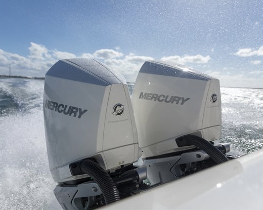
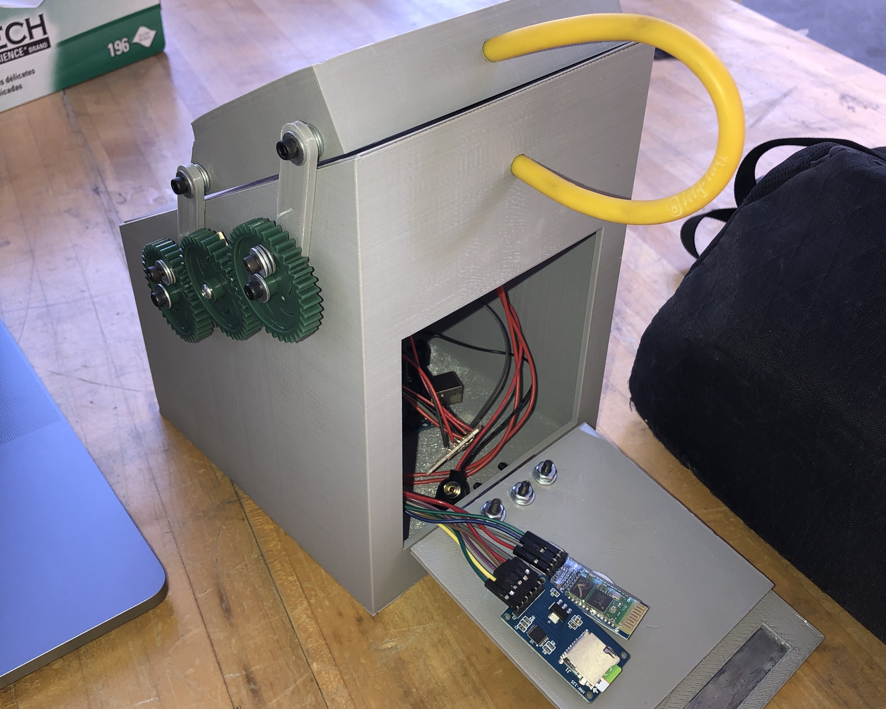
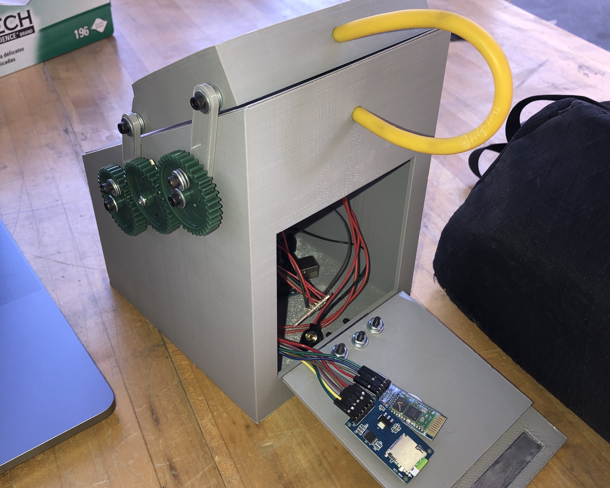

Everglades Boats Internship
New Technology Integration

On Everglades' upcoming model, they hope to incorporate some of the marine industry's newest technologies. This includes voice control features, phone connectivity, improved engine models, display systems, lighting fixtures, etc. I worked with companies like Garmin International, Taylormade, Mercury Marine, and Yamaha Motor Company to understand where the luxury fishing boat market was heading, and what new technologies could and should be implemented on the new model. This work included meetings with design engineers, electrical engineers, and upper level managers to investigate the impact these innovations would have on the product line as well as the customer.


 
